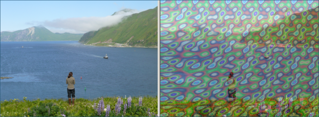

Artistic Effect: Gas Plasma
Previous
Top
Next
The Gas Plasma effect overlays a photo with a color pattern that looks like plasma, or maybe drops of oil on water. You can adjust the size of the pattern, the color shift, and the opacity of the color pattern.
